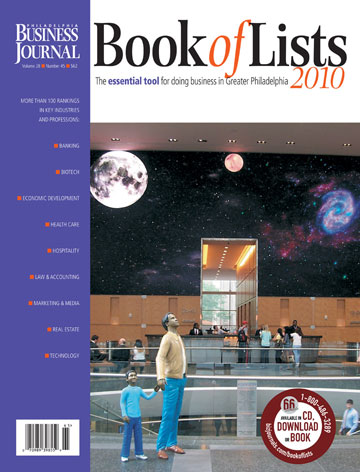

In the last section, you read that prospecting can be compared to setting up the plans and laying the foundation for a building project. You could also say that prospecting is a little like going to class or making your bed—you’ve got to do it, and you know that it won’t be long before you’re doing it again (assuming you make your bed regularly!). Because prospecting is one of those jobs that’s never truly finished, it’s helpful to draw on a number of sources and be creative about the places where you find your leads.
Knowing your ideal customer and where he or she is likely to go for information will allow you to choose the best prospecting sources for your business. It helps to be your customer. Imagine yourself in your prospect’s shoes and think about where you would go for information. For instance, if you are a photographer who specializes in professional yearbook and graduation pictures, you might want to set up a Facebook account so you can let students in local schools know about your services.Adam Stone, “Dennis Kelly Photography Took a Shot with Facebook,” Philadelphia Business Journal, June 5–11, 2009, 10–11. Meanwhile, if you’re in B2B sales and your ideal prospects are car dealerships in northern California, you might build up your professional network by joining the local branch of the National Auto Dealers Association or by joining some community organizations in your city.
Prospecting takes knowledge and creativity, so start your prospecting and qualifying with the top ten power prospecting list below. No matter what business you’re in, think of this section as your GPS for finding the leads that will fuel your business growth.
It costs five times more to attract a new customer than to keep an existing customer.Jeff Bressler, “How Much to Spend to Acquire New Customers?” CEO World Magazine, May 13, 2009, http://ceoworld.biz/ceo/2009/05/13/hto-much-to-spend-to-acquire-new-customers (accessed June 10, 2009). So it stands to reason that your best new customers are your existing customers. Salespeople who make an effort to deliver excellent customer service during and after a sale know the secret that some of their best prospects are the customers they already have. To keep and develop your existing customers, love them, service them, be partners with them, live and breathe in their world, understand them, and anticipate their needs, and you will succeed in sales.
One of the keys to retaining your best customers is to keep in touch with your customers’ needs and update your solutions as their needs change. Say you work for a marketing company that offers a variety of services to businesses. One of your customers, a record company, is using your printing services, but they’re turning to another organization for their public relations needs. If you’re aware of this, your existing customer is now a prospect for additional sales. You might tell the record company, “You know, your current PR people are setting up events and concerts to increase your publicity, and that seems to be working only moderately well. If we were running your PR, we would integrate your events with a variety of other media. For instance, we think a blog would be a hugely effective tool.…” If the company is already a loyal customer and you let them know that you are aware of their needs and can offer a better solution, then you may very well make a new sale.
There’s nothing more powerful than getting information about a product or service from a friend or people you trust before you buy. Think about the last time you bought a printer. You probably checked out the customer reviews on Amazon, asked your friends, checked out some blogs, and maybe even got some insights on Twitter (in 140 characters or less). Before you bought the Hewlett-Packard (HP) OfficeJet 6310, you knew exactly what to expect from people who have bought and used the product, and you learned that if you buy it at Office Depot, you get free shipping and two free ink cartridges. Although you never shopped at Office Depot before, you were sold before you even clicked “buy now” on the Office Depot’s Web site. Imagine that you didn’t even come in contact with HP or Office Depot. You made your purchase based solely on the information from others. The power of the referral cannot be underestimated.
Referrals and word-of-mouth advertising have always been one of the most effective—and cost-efficient—ways to get new customers. It used to be that the circle of referrals was limited to people who used your product or service in a given geographic area. The Internet has amplified that network, especially with user-generated content such as communities, blogs, customer ratings and reviews, and social networking sites. So as a salesperson, you have to think creatively about all of resources you have to generate referrals.
Seth Godin, best-selling author and entrepreneur, talks about “flipping the funnel.” He challenges salespeople to think about turning the sales funnel on its side, thinking of it as a megaphone, and then handing the megaphone to those who already love you. He suggests that when many of your customers enter into the conversation on Web sites such as Digg, Flickr, and Delicious, the power of your message gets even stronger, and new referrals find you.Seth Godin, “How to Flip the Sales Funnel,” video, Selling Power, http://www.youtube.com/watch?v=McmEyr0oWew (accessed June 9, 2009). Listen to Seth describe how your customers can be your best salespeople.
Seth Godin Interview
(click to see video)Hear how flipping the funnel is the best way to get new customers.
Source: SellingPower.com
Want to see how it works? When Naked Pizza, a small takeout and delivery operation in New Orleans, decided they wanted to compete with the city’s chain pizza places, they turned to their existing customer base for sales prospects by putting their Twitter address on every pizza box that went out the door. As Jeff, Randy, and Brock, the company’s founders put it, “Even your most core customers must be continually and softly nudged.”Jeff Leach, Randy Crochet, and Brock Fillinger, “How One Small Business Uses Twitter to Build Its Brand,” Advertising Age, May 29, 2009, http://adage.com (accessed June 9, 2009). The prospecting effort has been a huge success with their existing customers posting tweets that have introduced the brand to new customers. The Twitter-enabled follow-ups allowed Naked Pizza to continue the conversation and ensure that a greater number of first-time buyers become repeat customers—and that they spread the word to more new customers. Talk about a megaphone!
Whether you sell pizza or insurance, if your existing customers are happy, they’re usually happy to refer you to their friends, online or offline. Consider Flycaster & Company, a Florida-based branding and advertising agency for businesses. For a number of years now, almost 100 percent of the firm’s new customers have been referred to them by friends and colleagues. According to John Spence, one of the company’s managers, referrals are the “best possible” source of prospects for any B2B business.John Spence, “Seven Steps to Successful B2B Marketing,” John Spence Blog, comment posted October 31, 2007, http://johnspence.com/blog/?p=52 (accessed June 9, 2009).
So let your customers speak for you. Their voices will be heard by people you could never reach.
Networking works.
The art of networking, developing mutually beneficial relationships, can be a valuable prospecting tool, not only for retaining old prospects, but also for connecting with new ones. The larger and more diverse your network becomes, the bigger your pool of potential prospects. Your networking connections often become sources of referrals for your business, just as you will become a referral source for theirs.
If you’re a member of the American Chemical Society and you work for a chemical supply company, you might use your membership to get acquainted with chemists who work at a variety of labs. You could offer them your card and let them know that you provide supply discounts for fellow Chemical Society members. Now these prospects will be more likely to buy their chemical supplies from you than from a company or individual with whom they have no personal connection. If one of your customers needs a chemist with a particular specialty, you, in turn, will be able to refer him to someone in your network. Joining a professional trade association is one simple way to network with others in your field, or with prospects in your target industry.
If your business is location specific, joining community organizations can also be a valuable tool for connecting with local business leaders and prospects. Consider service organizations (like the Rotary Club), fraternity organizations, and other affinity groups that will allow you to build relationships with members of the community.
What about social networking? You’re probably well acquainted with online social networking sites like Facebook or MySpace, but you may be less familiar with the ways people leverage these tools in a professional capacity. According to professional networking expert Clara Shih, online social networks can be an effective means of prospecting for sales with organizations. After all, the decision makers at any organization are individuals with whom you can build relationships (remember, you learned in Chapter 3 "The Power of Building Relationships: Putting Adaptive Selling to Work" that even though it’s called business-to-business, buying decisions are made person-to-person, so relationships matter).Clara Shih, The Facebook Era (Upper Saddle River, NJ: Prentice Hall, 2009), 2. By connecting socially with key individuals, not only can you open lines of communications with potential customers, but you can also build your knowledge of your prospect base.
Professional networking sites like LinkedIn are increasingly important as well. (In fact, the Selling U section of this chapter includes information about how you can use professional social networking sites to help you network to find a job.) And there are many industry-specific networking sites you can join, like Sermo for doctors or INmobile.org for people in the wireless industry.Jessica E. Vascellaro, “Social Networking Goes Professional,” Wall Street Journal, August 28, 2007, http://online.wsj.com/article/SB118825239984310205.html (accessed June 9, 2009). Your profile on professional networking sites becomes a tool for selling yourself as a brand. These sites allow you to list your education, professional experience, and testimonials from satisfied customers, and as you add contacts, you become connected to their contacts, allowing your network to grow.Clara Shih, The Facebook Era (Upper Saddle River, NJ: Prentice Hall, 2009), 2.
This article includes examples of how some major companies are using Twitter to drive sales.
http://www.sellingpower.com/content/newsletter/issue.php?pc=1007
Figure 7.5
American City Business Journals publish the Book of Lists in cities across the country. The book includes lists of local companies by category including fastest-growing privately held companies, women-owned companies, nonprofit organizations, and more. The book is also available online at http://www.bizjournals.com.
Source: Philadelphia Business Journal, used with permission.
Forget Google for a minute. It might surprise you to know that your local library can actually be a potential goldmine for finding prospects in B2B sales. If you spend even twenty minutes with a knowledgeable librarian, he can point you to business lists, journals, and business directories that will help you generate a pool of leads to contact. Your ideal customer profile is an important guiding tool here.
If you want customer information that’s location specific, check out your local chamber of commerce listing. It’s one of the best sources for finding local businesses. If the listing is not at the local library, chances are the librarian will have the contact information for the chamber office.
You can also review business lists and directories published by local newspapers and regional business journals. Local newspapers and their Web sites often provide listings of local businesses along with key information about the company. Also, the Book of Lists is published locally by the American City Business Journals in several cities—for example, the Philadelphia Business Journal publishes the Book of Lists for the Philadelphia, South Jersey, and Delaware area. It is a book that includes lists of companies organized by groupings. For instance, the fastest-growing companies, minority-owned businesses, and lists of companies by industry such as video production companies, health care companies, public relations agencies, law firms, and more are included with the contact information, profiles, and key facts for specific businesses in your state or city. You can generally find these books at your local library, and they’re an excellent source for digging up prospects that most closely match your ideal profile. Business lists are also published by other business journals such as Crain’s in some key cities or are available online (also see Power Prospecting Source #6: Trade Journals and Business Journals below).
If you want to search businesses by industry, ask a reference librarian to help you look up the North American Industry Classification System (NAICS)System that classifies businesses by sector and industry. NAICS and SIC codes are helpful ways to search directories for businesses that fit your ideal prospect profile. code and the Standard Industrial Classification (SIC)System that classifies businesses by sector and industry. NAICS and SIC codes are helpful ways to search directories for businesses that fit your ideal prospect profile. code that most closely matches your ideal prospect’s business—or access the indexes online, and bring the codes with you to the library. NAICS and SIC codes are numbering systems that classify businesses by their particular industry, so they can be valuable search criteria to mine general business directories (e.g., Ward’s Business Directory of U.S. Private and Public Companies) for specific kinds of companies. For example, you could use the SIC code 6371 to find all businesses that deal with pension, health, and welfare funds.Occupational Health and Safety Administration, “SIC Search,” United States Department of Labor, http://www.osha.gov/pls/imis/sic_manual.display?id=56&tab=group (accessed June 9, 2009). You can also search through industry-specific directories like the Standard Directory of Advertisers, and you can check out professional trade associationsAn organization whose members are individuals or businesses that operate in a specific industry. related to your prospect profile. These organizations, whose members all operate in a particular industry, are especially good places to look if your ideal prospect is a smaller business because smaller businesses and individuals are the most likely to join. Ask your librarian if she can access a copy of Gale’s Encyclopedia of Associations, which lists more than 160,000 trade organizations. Finding a relevant association should be no problem, as you can find a professional organization for virtually any industry you can think of. Even the pecan shellers of America have a professional association!David Whitford, “Built by Association,” Inc., July 1994, http://www.inc.com/magazine/19940701/3005.html (accessed June 10, 2009).
Going to the library can be hugely helpful because it gives you access to people who are pros at finding information. Also, the added perk is that your library will probably give you free access to several online business directories and databases.Boston Public Library, “Directories on the Internet,” http://www.bpl.org/research/kbb/websites/dirs.htm (accessed February 15, 2010). Of course you can search these directories from the comfort of your own home or office, but if you want the deluxe package—the most up-to-date directories that cover industries of all types nationwide—you’ll have to pay a price. Online business directories, such as those listed in the table below, are searchable by industry and will give you access to company contact info, number of employees, financial standing, industry rankings, names of executives, and other company profile information. Most of these directories allow you to search businesses by SIC or NAICS codes.
So how do you know which business directory to use? For one thing, it helps to know whether your ideal prospect would be a private company or a public company or whether it could be either. Is your ideal prospect a large organization that attracts top executives? In this case, you’ll mostly be searching for public companiesA company that sells stocks and bonds to the general public.—companies that sell stocks and bonds to the general public. Public companies are required to file financial information and other company reports with the U.S. government, so these organizations are easier to find in general business directories, and their directory listings usually provide more detailed company information.Center for Business Research, “Public vs. Private Companies,” Long Island University, http://www2.liu.edu/cwis/cwp/library/cbr/publicvprivate.htm (accessed June 10, 2009). However, not all large companies are publicly owned. State Farm Insurance and Cargill Foods, for example, are both private companies.“About Hoovers Handbook of Private Companies 2009,” Hoovers, http://images.hoovers.com/images/i/books/lookinside.pv2009.pdf (accessed June 10, 2009). If you’re only interested in smaller, local businesses, you will be dealing with private companies, or companies that aren’t owned by the public. In this case, some directories and databases will be more helpful to you than others.
Another thing to consider is whether you want the option to refine your search to include a number of criteria closely matching your ideal prospect profile. Several online databases allow you to input multiple search terms like location, company size, and minimum and maximum sales volumes.
Table 7.1 Online Databases and Directories for Prospecting
| Database or Directory | Good source for private companies | Good source for public companies | Description |
|---|---|---|---|
|
infoUSA |
✔ | ✔ |
|
|
Dialog |
✔ | ✔ |
|
|
Bizjournals http://www.bizjournals.com/bizjournals/sales_ marketing/prospecting |
✔ | ✔ |
|
|
Hoovers |
✔ | ✔ |
|
|
Standard & Poor’s |
✔ | ✔ |
|
|
D&B Million Dollar Database |
✔ | ✔ |
|
|
D&B Prospector |
✔ | ✔ |
|
|
Mergent Online |
✔ | ✔ |
|
|
Directory of Corporate Affiliations |
✔ | ✔ |
|
Figure 7.6
Business journals such as the Philadelphia Business Journal can be an excellent source of leads. Business journals for various cities are available at http://www.bizjournals.com.
Source: Philadelphia Business Journal, used with permission.
Where could you go to learn that three bottled beverage companies have recently lightened their package designs, that a new biodegradable shrink film is now on the market, and that the Pharmaceutical Packaging Forum has chosen a location for its next event? These definitely aren’t top headlines on Yahoo! But to people in the packaging and packing materials industry, this is important news, and many of them use Web sites like Packworld.com to stay updated. Trade publicationsA publication (online or in print) targeted to professionals in a particular industry., journals geared toward people who work in a certain industry, and trade Web sitesWeb sites with content that is focused on a specific industry. are good sources for netting prospects. For instance, if you work for a company that designs food and beverage packaging, and your department specializes in bottle design, you might read an article on Packworld.com and find out that Pepsi has released a new, eco-friendly bottle design for its Aquafina product that uses 50 percent less plastic than the 2002 version.“Beverage Bottles Lighten Up,” Packworld, May 1, 2009, http://www.packworld.com/news (accessed June 10, 2009). You decide to make a call to some managers at competing companies like Fiji. You tell these prospects that you’ve read about their competitor’s new bottle design and ask if they are interested in some packaging updates as well, which will help save on shipping costs and provide some good PR.
Many industry trade journals offer free e-mail newsletters or even free copies of the magazine. If you don’t know the best trade journals to read in the industry in which you are interested, ask a professor. Your professor will be happy to show you copies of specific trade journals and the corresponding Web sites. It’s a good idea to take the time to sign up for the free updates and check to see if the publication offers a free subscription to the magazine.
But what if your ideal prospects aren’t limited to a particular industry but are specific to a certain location? In this case, business journalsA publication offering business news and industry information that is usually specific to a certain region., which are often regionally published and offer business news and industry information for particular cities or states, will be helpful. Your local library will undoubtedly have a subscription to one, or even several, business journals for your region. Additionally, Bizjournals.com links you to the Web sites for forty regional business journals.
If you’ve ever been to a trade showA gathering of resources for people in a particular industry or those who have a common interest in a topic. or expo, like a career fair or bridal show, you know they’re a good place to find out about products and services about which you might not otherwise be aware (and to get some fun free giveaways while you’re at it). While most people who stop by a given booth at an expo might not be seriously interested prospects, trade show displays and product demonstrations generate enough strong leads to make this activity a worthwhile prospecting endeavor. For one thing, trade shows are industry-specific events that have the advantage of bringing your target market to you. If you are a horse breeder and you know that an estimated ten thousand visitors will attend the Horse World Expo in Syracuse, New York, you might decide it’s worthwhile to go.Paige Palmateer, “Inaugural Horse World Expo Coming to Syracuse,” CNY Business Journal, May 4, 2007, http://findarticles.com/p/articles/mi_qa3718/is_20070504/ai_n19304825/?tag=content;col1 (accessed June 10, 2009). You could look into giving a presentation about judging horse pedigrees, for instance, or maybe you will pay to set up a booth with videos and photos of the horses you breed and sell.
As a salesperson, you can use trade shows not only to present and demonstrate your products but also to identify and qualify prospects.Barton A. Weitz, Sephen B. Castleberry, and John F. Tanner, Jr., Selling: Building Partnerships (New York: McGraw-Hill Irwin, 2003). Asking a few specific questions can help you assess a prospect’s needs and determine whether he has a genuine interest—as well as the resources—for buying. Trade show booths usually have a place for leads to enter their contact information so you can follow up with your prospects and save leads in your customer database. If you are a sales representative for a textbook company and you attend a faculty book fair at a large university, when professors stop by your booth, you might ask them which texts they are currently using and what they like or dislike about these books. This is a quick way to identify potential need. One professor might tell you she uses such-and-such a textbook, which is thorough, but her students don’t find it very engaging. Aha! You have identified a need, and you now have a prospect. You might tell the professor about a textbook that covers similar information but uses a more conversational style and ask if she would like you to send her a complimentary copy. If she says yes, you now have an opportunity to take her contact information, and you have permission to follow up.
When you think of “junk mail,” you probably think about something you would normally throw in the trash. But have you ever received a direct-mail advertisement that you’ve actually considered, or even responded to? Maybe you’re a member of the American Library Association, and someone has sent you an e-mail about an upcoming library conference in a nearby city because you opted in, or gave permission to receive information from the company. Or maybe a local real estate agent has sent out fliers to the residential areas in your zip code and you just happen to be thinking of selling your house.
As a sales professional, direct marketingCommunication in the form of mail or e-mail that is sent directly to a lead., or communication in the form of direct mail or e-mail sent directly to your potential prospects, gives you the advantage of reaching a large pool of leads without having to invest the time to individually contact each one. Methods such as direct mail and e-mail allow your prospects to self-qualify since only the ones with genuine interest will follow up. On the flip side, direct mail yields a lower rate of return than most other methods: usually only about one to three percent.Tony Alessandra, “Direct Mail Prospecting,” Speakers Roundtable, http://www.speakersroundtable.com/sales-training-tony11.html (accessed February 15, 2010).,Tony Alessandra, “Direct Mail Prospecting,” Speakers Roundtable, http://www.speakersroundtable.com/sales-training-tony11.html (accessed February 15, 2010). E-mail has similar response rates depending on the offer or communication. These methods can still be worth the investment, considering the relatively low inputs of time and money it takes to reach so many.
However, the time and money you do put into direct mailing or e-mail campaigns will be wasted if you send out your communications at random. There are three ways you can go about generating targeted mailing lists:
In the last ten years, Pat Cavanaugh, CEO of a Pittsburgh-based promotional products company, has grown his business 2,000 percent—and he’s done almost all of it through cold calling. Cold callingMaking an unsolicited phone call or visit to a sales lead., or making an unsolicited phone call or visit to a prospective customer, can be quite effective for the salespeople who know the right approach, but it’s also most salespeople’s least favorite prospecting activity. For one thing, you never know whether the person on the other end of the line will be rude or hang up on you altogether. Additionally, most salespeople feel pressured to actually sell their product or make a pitch during a cold call, but according to Cavanaugh, cold calling isn’t about making sales; it’s about establishing a connection with the prospect.Susan Greco, “The Nonstop, 24-7 CEO Salesman,” Inc., August 2000, http://www.inc.com/magazine/20000801/19766.html (accessed June 11, 2009).
According to Cavanaugh, it’s essential to get the prospect to like you in the first thirty seconds.Susan Greco, “The Nonstop, 24-7 CEO Salesman,” Inc., August 2000, http://www.inc.com/magazine/20000801/19766.html (accessed June 11, 2009). While this may sound like it’s putting a lot of pressure on you as the caller, you can actually think of it as a way of taking the pressure off. Remember, you don’t have to sell your product during the call; the goal is only to make a positive connection. You don’t have to lay the schmooze on either. Instead, be direct and sincere, and be yourself. Your prospect, who is probably very busy, will appreciate directness and brevity.
Hanzo Ng, CEO of the Malaysian company Sales Ninja, agrees. Ng says the goal of the cold call should be to find out whether your prospective buyer’s needs match your solutions. If you know you can’t help your lead solve her problems, you shouldn’t pursue the call further.Hanzo Ng, “Prospecting, Cold Calling & Networking,” Malaysian Business, October 1, 2008, http://findarticles.com/p/articles/mi_qn6207/is_20081001/ai_n30902653/?tag=content;col1 (accessed June 11, 2009). A cold call is a perfect way to find out at what stage the lead is in of his buying process. She might still be a lead for future sales, but at this time she isn’t a qualified prospect. For that matter, if your lead seems unreceptive, you might also decide to end the call or to offer to try back at another time. Ultimately, it’s important that your prospective buyer doesn’t feel like she’s being pressured in any way; people have come to expect pushy salesmen and saleswomen on the phone, and you want to set yourself apart from this perception.
If the lead does have a problem that you can address, you should go ahead and offer to make an appointment to meet in person. Again, there should be no pressure on either end; your prospect will accept an appointment if she is interested. If she doesn’t agree to an appointment, don’t try to press it. Sometimes, it may simply be a matter of timing: your prospect might ask you to call back in few months. In this case, get your calendar out and set up a specific time when you can try to call back. For instance, “Three months from now will be early March. Is it all right for me to try calling again then?” If she agrees, go a step further and ask something like this: “In the meantime, would it be OK if I sent you occasional updates by e-mail to let you know about new developments and promotions with our product?” This enables you to periodically follow up so that you maintain a connection with your lead.Keith Rosen, “Keep the Lines of Communication with Your Prospects Open,” AllBusiness, http://www.AllBusiness.com/sales/sales-management/4001387-1.html (accessed June 11, 2009).
Finally, it’s important to research your prospect before making a call. You should know the size and scope of the company, key people, company culture, and anything about the company that has recently come up in the news. Doing your research allows you to personalize your introduction. After explaining who you are, you might say, “I recently read in Crain’s Chicago Business that your company’s number one priority in the coming year is doubling revenues by increasing your sales force….” Doing your research and keeping a few simple tips in mind should take the pressure off in cold calling and give you the confidence to establish crucial prospect connections.
Wouldn’t it be great if, rather than going out to track down prospects, you could get your prospects to come to you? Presenting yourself as a subject matter expertBeing an authority in a specific industry or topic., an authority in your field, is one secret for making this happen. CEO and consultant Keith Ferrazzi, started using this technique shortly after graduating from college. Even though he didn’t have much experience under his belt as a new graduate, he picked an area and began researching until others in his industry came to know him as an expert and would go to him for consultation and advice. Set up a blog or write articles offering free advice. According to Ferrazzi, you should make a habit of writing and publishing articles in your industry.Keith Ferrazzi, “To Be Known, or Unknown,” Inc., http://www.inc.com/resources/sales/articles/20061001/kferrazzi.html (accessed June 11, 2009).
If you include your contact information and a brief bio on the page, then qualified prospects will often find you on their own. For instance, maybe you work for a company that sells résumé and cover letter consulting services for job seekers. You decide to write an article explaining “10 Things to Avoid When Dressing for a Job Interview,” and you post the article on your blog and submit it to CollegeGrad, a Web site that publishes helpful blog posts like yours. You allow CollegeGrad to use your article for free in exchange for posting a link to your Web site in the margins of the Web page. Now when people perform a Google search on “dressing for a job interview,” your article may come up, ensuring that a number of people who match your ideal prospect profile see the information about you and your product.
When generating B2B leads, you can often find prospects by offering Web-based seminars, or Webinars, with helpful advice on some aspect of marketing, or by publishing informative reports (white papersAn informative report that offers practical solutions to a specific problem.) that people can download for free. For instance, a marketing consulting firm might offer a white paper on “Increasing Your Open Rate on E-mails” that businesses can download for free as long as they register their information on the firm’s Web page. Requiring users to register allows the firm to track contact information for new leads with whom they can then follow up by e-mail, cold call, or mail. Even better, if a lead finds that the free advice they downloaded is useful, they will quite likely contact the firm voluntarily to find out about the marketing services they provide.
If you’ve ever ordered shoes from Zappos, you might be aware that the company is known for its excellent customer service. But you might not know one of their secrets to achieving this: keeping detailed records of every interaction they have with a customer. These records are part of a customer relationship management (CRM)The process a company uses to organize and track their current and potential customer information. system, the tools a company uses to record and organize their contacts with current and prospective customers. If you ever shop at Amazon, you’ll notice the product suggestions that pop up on your screen when you log on. That’s also an example of how CRM is used.“Making Customer Relationship Management Work,” Inc., 2001, http://www.inc.com/articles/2001/07/23102.html (accessed June 11, 2009).
CRM software allows you to maintain relationships in a systematic way, following up more consistently with your leads and continuing to meet the needs of your existing customers. If the individual with whom you’ve been doing business at a particular company leaves, you should update that in your database and begin prospecting for another lead at the company. If you’ve recently mailed information to some of your leads, CRM software will help you keep track of which customers the mailing went to and how recently it went out, so you know when to follow up with those prospects by phone. You have a huge range of CRM programs from which to choose, and while these applications were once large-business luxuries, more recently there are versions that are priced within the reach of smaller businesses as well.Karen M. Kroll, “CRM: Software as a Customer Service,” Inc., 2007, http://technology.inc.com/software/articles/200706/CRM.html (accessed June 11, 2009).
On the other hand, depending on the type of sales and prospecting your company does, you may only need to use a contact management system (CMS)A system for tracking and organizing customer and prospect information that is less complex than CRM and doesn’t necessarily keep a record of every customer contact., a system that keeps track of your customer calls and meetings, which is usually less expensive than CRM software. CMS programs are another means of tracking and organizing customer and prospect information, but unlike CRM, CMS programs don’t track all information about every customer interaction. If you are the only person from your organization dealing with a particular prospect (e.g., if you’re a stockbroker or a real estate agent), you usually only need CMS software. The CMS will allow you to keep current contact and company information on your prospects and to record detailed notes about your conversations with them. But if your company uses multiple methods and/or multiple salespeople to communicate with a prospect (think Zappos.com or Best Buy), then CRM will be a better tool so that each salesperson who interacts with the customer can record their interactions with that individual or company and so that your organization know how and when to follow up.Andrew Boyd and Alex Jeffries, “The Crucial Difference Between Contact Management and CRM,” E-commerce Times, January 29, 2009, http://www.ecommercetimes.com/story/smb/65995.html?wlc=1244423929 (accessed June 11, 2009).
If you know your prospect is an eight-year-old online auction house with fifty-two employees operating out of Atlanta, that’s information—statistics you regularly update in your customer databases. These are facts that your competitors can also easily access using a simple online directory search. But what about the last time you visited your prospect in person? While waiting to meet with your contact, you overheard the receptionist talking about the complaints the company had been getting recently because of their confusing Web page layout. If you represent a Web design firm, that’s valuable information, and it’s news your competitor can’t access. In other words, it’s not just information, it’s intelligence. You can use this intelligence to your advantage when you put it together with other information. In this situation, assume you happen to know that one of the competing design firms in town just lost its best online retail specialist, while your company has two designers who have worked with similar online retailers in the past. So you know your company can address your prospect’s need in a unique way. Now you’re armed with competitive intelligence. Keeping your eyes and ears open for intelligence during every interaction is an important part of prospecting, and it’s particularly important to track the intelligence you gather in your customer databases. You never know when it might prove useful.
It’s also helpful to think about information that will help you make a personal connection to your prospect (remember from Chapter 1 "The Power to Get What You Want in Life" how important the emotional connection is). Your observations and information gathering should carry over to personal details like your prospect’s family, his birthday, or his hobbies. Include these insights as part of your organized records, too. It might seem strange at first to make a formal record of personal details, but keeping track of things like the name of your prospect’s two children sends the message that you care about the person, not just his business, and this in turn builds customer loyalty. Upscale hotels like the Four Seasons do this kind of customer relationship management particularly well. Receptionists and concierges track personal details of repeat customers, learning to greet them by name and ask about specific details from previous visits: “Did your sister like the gift you bought her last time you were here?” or “How was your recent trip to Japan?”
Things can change quickly in business, particularly at large companies. The account manager you spoke with last month may have moved to another company yesterday, or the purchasing agent who seemed excited about your product last year may have had to deal with significant budget cuts this year that prevent him from buying again. That’s why it’s crucial to keep your prospect information current. If your competitor sees an opportunity before you do, you’re likely to lose yourself a prospect. And if the individual with whom you’ve been doing business at a company is no longer working there, it’s important to find another key person to contact soon if you want to keep your customer.
Several online business directories (like those mentioned earlier) let you subscribe to customized alerts that will notify you when one of your target companies appears in the news, when there’s turnover of key personnel, or when companies in your industry merge or split off. Most of the directory services have a fee, but there are a number of ways to stay current, on industry news at least, without paying. RSS (Really Simple Syndication) readers (Microsoft Outlook has one, and so does Google) allow you to subscribe to specific news feeds, like The Hollywood Reporter or Advertising Age’s Web page, so that you can keep abreast of the news that affects your industry without having to go out and mine several Web pages every day. Google News Alerts (http://google.com/alerts) is a free service that sends you e-mail updates of the latest Google search results based on your choice of search criteria so you can keep current on your competitors and prospects.
After you’ve identified your prospects, it’s important to understand that all customers are not created equal. Some customers are willing to form business partnerships and grow with you over time while others are just looking to do business with whoever offers the lowest price. Some prospects may never be able to help you or your company achieve your business goals, or their goals may not be strategically aligned with yours, even if you really like doing business with them. Choosing customers carefully will save you time and energy and help you meet you goals. You don’t want to spend several hours writing up a proposal for one of your prospects only to find out they were never genuinely interested.Paul Cherry, Questions That Sell: The Powerful Process of Discovering What Your Customer Really Wants (New York: AMACOM, 2006), 37.
Think back to the sales funnel and the idea that you start out with a large pool of leads and end with a much smaller number of customers. While it is important to cast your nets broadly when you’re rounding up leads, you’ll work most effectively if you weed out the likely from the unlikely early on. You can qualify your leads to determine whether they are legitimate prospects by discovering whether they have the willingness and the ability to make a purchase. Consider these five questions to help you meet your qualifying objectives:
So you’ve qualified your prospect and you have his or her information in your CRM system. It would be nice if that were all it took. But your CRM is only a way of tracking and organizing customer information; making an action planA specific method of approach for each customer., a specific plan of approach, for each customer is up to you. And you won’t make any sales if you don’t act.
After qualifying, you might have some prospects with a clear need, buying authority, and a fairly high level of interest, while others seem uncertain. If you classify your prospects as “hot,” “warm,” and “cold,” you can prioritize by devoting the most initial energy to your top potential customers.Derek Brown, “Growing and Managing Your Prospect Pipeline,” Coreconnex, February 2, 2009, http://www.coreconnex.com/2009/02/04/growing-and-managing-your-prospect-pipeline (accessed June 11, 2009). No two customers are alike. This means that even though you’ve qualified prospects A and B and determined that they do have needs you think you can meet, those needs will be different, possibly drastically so. It’s a good idea to begin your action plan by conducting a careful needs analysis—that is, what specific problems is this prospect facing and how can my product help solve those problems?
Finally, think about the next steps in the sales process. Based on this customer’s specific needs, how will you design your preapproach? What details should be in your presentation, when should you make your presentation, and how and when will you try to close? Develop a timeline and plot out the steps. If you can envision the sale, you are already halfway there.
Identify the industry for each of the following NAICS codes. How would this information be helpful in prospecting?